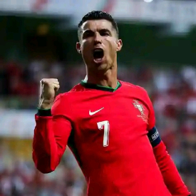
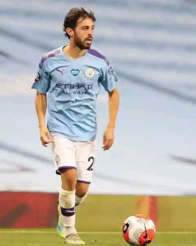
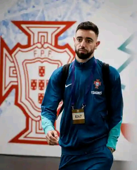
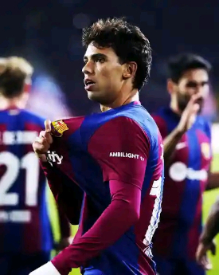
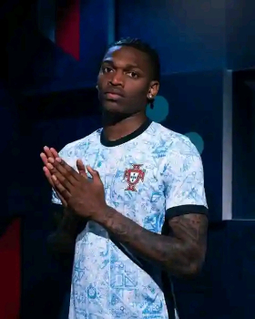
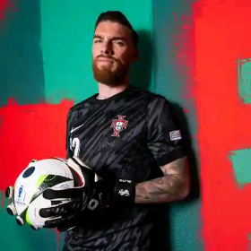
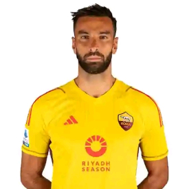
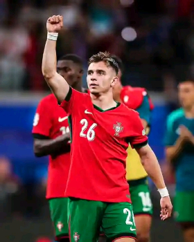
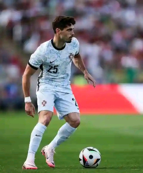
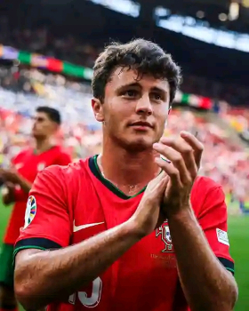

Plantel da Seleção portuguesa de futebol
Pepe
Posição: defesa Idade: 40 anos Pé: direito Club: PortoRuben Dias
Posição: defesa Idade: 24 anos Pé: direito Club: Man. City

Bernardo Silva
Posição: avançado Idade: 29 anos Pé: esquerdo Club: Man. City
João Cancelo
Posição: defesa Idade: 29 anos Pé: direito Club: Man. City

Bruno Fernandes
Posição: medio Idade: 29 anos Pé: direito Club: Man. United

João Felix
Posição: avançado Idade: 24 anos Pé: direito Club: ATL. MadridDiogo Dalot
Posição: defesa Idade: 27 anos Pé: direito Club: Man. UnitedDiogo Costa
Posição: guarda-redes Idade: 24 anos Pé: direito Club: PortoDiogo Jota
Posição: avançado Idade: 27 anos Pé: direito Club: LiverpoolGonçalo Inacio
Posição: defesa Idade: 22 anos Pé: direito Club: SportingGonçalo Ramos
Posição: avançado Idade: 22 anos Pé: direito Club: PSG
António Silva
Posição: defesa Idade: 20 anos Pé: direito Club: Benfica

Rafael Leão
Posição: avançado Idade: 25 anos Pé: direito Club: AC. Milan

José Sá
Posição: guarda-redes Idade: 31 anos Pé: direito Club: Wolves

Rui Patrício
Posição: guarda-redes Idade: 36 anos Pé: direito Club: AS. RomaDanilo Pereira
Posição: defesa Idade: 31 anos Pé: direito Club: PSG

Francisco Consceição
Posição: medio Idade: 21 anos Pé: esquerdo Club: Porto

Pedro Neto
Posição: avançado Idade: 24 anos Pé: esquerdo Club: WolvesVitinha
Posição: medio Idade: 24 anos Pé: direito Club: PSGJoão Palhinha
Posição: medio Idade: 28 anos Pé: direito Club: Fulham
